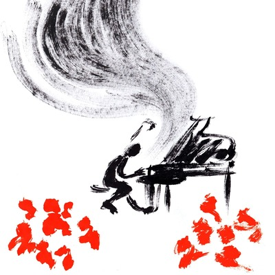

L'évaluation / Diagnostic
Dès la première rencontre, pour chaque élève, le pédagogue doit dessiner une situation évolutive et un projet de travail.
Esprit de recherche
Chaque élève apporte ses propres données ; ses propres réactions, son propre rythme d’évolution.
Tout en saisissant les instincts, intuitions, acquis et facilités de chacun, il faut trouver les difficultés, les manques, les failles qui demeurent...pour les structurer en ordre d’urgence et trouver un programme adapté.
Clartés des explications
L’élève doit quitter chaque séance en sachant le problème qu’il résoudra pour la semaine suivante. L’élève y voyant clair est ressourcé, confiant, heureux !
